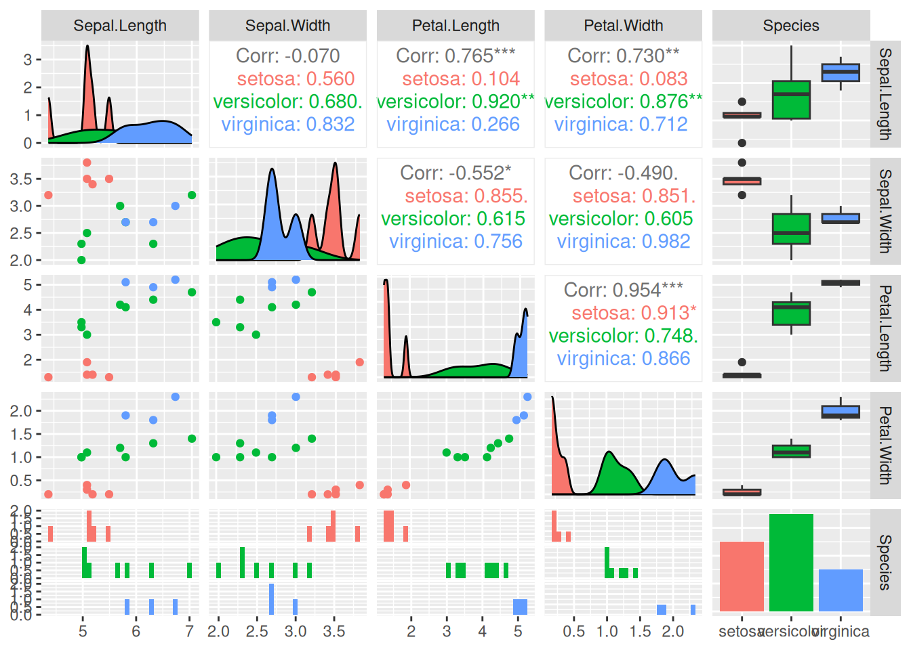

2 Data
Data for data mining is typically organized in tabular form, with rows containing the objects of interest and columns representing attributes describing the objects. We will discuss topics like data quality, sampling, feature selection, and how to measure similarities between objects and features.
After this chapter, you can read Appendix A Data Exploration and Visualization to learn more about data exploration and visualization in R.
Packages Used in this Chapter
pkgs <- c("arules", "caret", "factoextra", "GGally",
"palmerpenguins", "plotly",
"proxy", "Rtsne", "tidyverse")
pkgs_install <- pkgs[!(pkgs %in% installed.packages()[,"Package"])]
if(length(pkgs_install)) install.packages(pkgs_install)The packages used for this chapter are:
- arules (Hahsler et al. 2025)
- caret (Kuhn 2024)
- factoextra (Kassambara and Mundt 2020)
- GGally (Schloerke et al. 2024)
- palmerpenguins (Horst, Hill, and Gorman 2022)
- plotly (Sievert et al. 2024)
- proxy (Meyer and Buchta 2022)
- Rtsne (Krijthe 2023)
- tidyverse (Wickham 2023c)
2.1 Types of Data
2.1.1 Attributes and Measurement
The values of features can be measured on several scales ranging from simple labels all the way to numbers. The scales come in four levels.
| Scale Name | Description | Operations | Statistics | R |
|---|---|---|---|---|
| Nominal | just a label (e.g., red, green) | \(==, !=\) | counts | factor |
| Ordinal | label with order (e.g., small, med., large) | \(<, >\) | median | ordered factor |
| Interval | difference between two values is meaningful (regular number) | \(+, -\) | mean, sd | numeric |
| Ratio | has a natural zero (e.g., count, distance) | \(/, *\) | percent | numeric |
The scales build on each other meaning that an ordinal variable also has the characteristics of a nominal variable with the added order information. We often do not differentiate between interval and ratio scale because we rarely not need to calculate percentages or other statistics that require a meaningful zero value.
Nominal data is created using factor(). If the factor levels
are not specified, then they are created in alphabetical order.
Ordinal data is created using ordered(). The levels specify the order.
Ratio/interval data is created as a simple vector.
c(1, 2, 3, 4, 3, 3)
## [1] 1 2 3 4 3 32.1.2 The Iris Dataset
We will use a toy dataset that comes with R. Fisher’s iris
dataset gives the
measurements in centimeters of the variables sepal length, sepal width
petal length, and petal width representing the features for 150 flowers (the objects).
The dataset contains 50
flowers from each of 3 species of iris. The species are Iris Setosa,
Iris Versicolor, and Iris Virginica. For more details see ? iris.
We load the iris data set. Datasets that come with R or R packages can
be loaded with data(). The standard format for data in R is a
data.frame. We convert the data.frame into a tidyverse tibble.
library(tidyverse)
data(iris)
iris <- as_tibble(iris)
iris
## # A tibble: 150 × 5
## Sepal.Length Sepal.Width Petal.Length Petal.Width Species
## <dbl> <dbl> <dbl> <dbl> <fct>
## 1 5.1 3.5 1.4 0.2 setosa
## 2 4.9 3 1.4 0.2 setosa
## 3 4.7 3.2 1.3 0.2 setosa
## 4 4.6 3.1 1.5 0.2 setosa
## 5 5 3.6 1.4 0.2 setosa
## 6 5.4 3.9 1.7 0.4 setosa
## 7 4.6 3.4 1.4 0.3 setosa
## 8 5 3.4 1.5 0.2 setosa
## 9 4.4 2.9 1.4 0.2 setosa
## 10 4.9 3.1 1.5 0.1 setosa
## # ℹ 140 more rowsWe see that the data contains 150 rows (flowers) and 5 features. tibbles
only show the first few rows and do not show all features, if they do
not fit the screen width. We can call print and define how many rows
to show using parameter n and force print to show all features by
changing the width to infinity.
print(iris, n = 3, width = Inf)
## # A tibble: 150 × 5
## Sepal.Length Sepal.Width Petal.Length Petal.Width Species
## <dbl> <dbl> <dbl> <dbl> <fct>
## 1 5.1 3.5 1.4 0.2 setosa
## 2 4.9 3 1.4 0.2 setosa
## 3 4.7 3.2 1.3 0.2 setosa
## # ℹ 147 more rows2.2 Data Quality
Assessing the quality of the available data is crucial before we start
using the data. Start with summary statistics for each column to
identify outliers and missing values. The easiest way is to use the base R
function summary().
summary(iris)
## Sepal.Length Sepal.Width Petal.Length Petal.Width
## Min. :4.30 Min. :2.00 Min. :1.00 Min. :0.1
## 1st Qu.:5.10 1st Qu.:2.80 1st Qu.:1.60 1st Qu.:0.3
## Median :5.80 Median :3.00 Median :4.35 Median :1.3
## Mean :5.84 Mean :3.06 Mean :3.76 Mean :1.2
## 3rd Qu.:6.40 3rd Qu.:3.30 3rd Qu.:5.10 3rd Qu.:1.8
## Max. :7.90 Max. :4.40 Max. :6.90 Max. :2.5
## Species
## setosa :50
## versicolor:50
## virginica :50
##
##
## Feature names will be used in plots and analysis so having understandable
feature names is part of data quality.
Iris’s names are good but for most datasets, you may need to change
the names using either rownames()
or rename().
You can also summarize individual columns using tidyverse’s dplyr functions.
Using across(), multiple columns can be summarized. Un the following,
we calculate all numeric columns using the mean function.
iris |>
summarize(across(where(is.numeric), mean))
## # A tibble: 1 × 4
## Sepal.Length Sepal.Width Petal.Length Petal.Width
## <dbl> <dbl> <dbl> <dbl>
## 1 5.84 3.06 3.76 1.20To find outliers or data problems, you need to look for very small values (often a suspicious large number of zeros) using min and for extremely large values using max. Comparing median and mean tells us if the distribution is symmetric.
A visual method to inspect the data is to use a scatterplot matrix (we
use here ggpairs() from package GGally). In this plot, we can
visually identify noise data points and outliers (points that are far
from the majority of other points).
library(GGally)
## Registered S3 method overwritten by 'GGally':
## method from
## +.gg ggplot2
ggpairs(iris, aes(color = Species), progress = FALSE)
## `stat_bin()` using `bins = 30`. Pick better value with
## `binwidth`.
## `stat_bin()` using `bins = 30`. Pick better value with
## `binwidth`.
## `stat_bin()` using `bins = 30`. Pick better value with
## `binwidth`.
## `stat_bin()` using `bins = 30`. Pick better value with
## `binwidth`.
This useful visualization combines many visualizations used to understand the data and check for quality issues. Rows and columns are the features in the data. We have also specified the aesthetic that we want to group each species using a different color.
The visualizations in the diagonal panels show the smoothed histograms with the distribution for each feature. The plot tries to pick a good number of bins for the histogram (see messages above). The distribution can be checked if it is close to normal, unimodal or highly skewed. Also, we can see if the different groups are overlapping or separable for each feature. For example, the three distributions for
Sepal.Widthare almost identical meaning that it is hard to distinguish between the different species using this feature alone.Petal.LenghtandPetal.Widthare much better.The lower-left triangle panels contain scatterplots for all pairs features. These are useful to see if there if features are correlated (the pearson correlation coefficient if printed in the upper-right triangle). For example,
Petal.LengthandPetal.Widthare highly correlated overall This makes sense since larger plants will have both longer and wider petals. Inside the Setosa group this correlation it is a lot weaker. We can also see if groups are well separated using projections on two variables. Almost all panels show that Setosa forms a point cloud well separated from the other two classes while Versicolor and Virginica overlap. We can also see outliers that are far from the other data points in its group. See if you can spot the one red dot that is far away from all others.The last row/column represents in this data set the class label Species. It is a nominal variable so the plots are different. The bottom row panels show (regular) histograms. The last column shows boxplots to represent the distribution of the different features by group. Dots represent outliers. Finally, the bottom-right panel contains the counts for the different groups as a barplot. In this data set, each group has the same number of observations.
Many data mining methods require complete data, that is the data cannot
contain missing values (NA). To remove missing values and duplicates
(identical data points which might be a mistake in the data), we often
do this:
clean.data <- iris |>
drop_na() |>
unique()
summary(clean.data)
## Sepal.Length Sepal.Width Petal.Length
## Min. :4.30 Min. :2.00 Min. :1.00
## 1st Qu.:5.10 1st Qu.:2.80 1st Qu.:1.60
## Median :5.80 Median :3.00 Median :4.30
## Mean :5.84 Mean :3.06 Mean :3.75
## 3rd Qu.:6.40 3rd Qu.:3.30 3rd Qu.:5.10
## Max. :7.90 Max. :4.40 Max. :6.90
## Petal.Width Species
## Min. :0.10 setosa :50
## 1st Qu.:0.30 versicolor:50
## Median :1.30 virginica :49
## Mean :1.19
## 3rd Qu.:1.80
## Max. :2.50The iris dataset has no missing values, but one non-unique case is gone leaving only 149 flowers. Since only 1 out of 150 flowers in the dataset was affected, results on the remaining data will give very similar results to the complete data.
Typically, you should spend a lot more time on data cleaning. It is important to always describe how you clean the data, and how many objects are removed. You need to argue that conclusions based on only the remaining data are still valid.
2.3 Data Preprocessing
2.3.1 Aggregation
Data often contains groups and we want to compare these groups. We group the iris dataset by species and then calculate a summary statistic for each group.
iris |>
group_by(Species) |>
summarize(across(everything(), mean))
## # A tibble: 3 × 5
## Species Sepal.Length Sepal.Width Petal.Length Petal.Width
## <fct> <dbl> <dbl> <dbl> <dbl>
## 1 setosa 5.01 3.43 1.46 0.246
## 2 versico… 5.94 2.77 4.26 1.33
## 3 virgini… 6.59 2.97 5.55 2.03
iris |>
group_by(Species) |>
summarize(across(everything(), median))
## # A tibble: 3 × 5
## Species Sepal.Length Sepal.Width Petal.Length Petal.Width
## <fct> <dbl> <dbl> <dbl> <dbl>
## 1 setosa 5 3.4 1.5 0.2
## 2 versico… 5.9 2.8 4.35 1.3
## 3 virgini… 6.5 3 5.55 2Using this information, we can compare how features differ between groups.
2.3.2 Sampling
Sampling is often used in data mining to reduce the dataset size before modeling or visualization.
2.3.2.1 Random Sampling
The built-in sample function can sample from a vector. Here we sample with replacement.
We often want to sample rows from a dataset. This can be done by
sampling without replacement from a vector with row indices (using the
functions seq() and nrow()). The sample vector is then used to
subset the rows of the dataset.
take <- sample(seq(nrow(iris)), size = 15)
take
## [1] 46 42 37 120 78 31 13 114 80 72 109 45 59 139
## [15] 67
iris[take, ]
## # A tibble: 15 × 5
## Sepal.Length Sepal.Width Petal.Length Petal.Width Species
## <dbl> <dbl> <dbl> <dbl> <fct>
## 1 4.8 3 1.4 0.3 setosa
## 2 4.5 2.3 1.3 0.3 setosa
## 3 5.5 3.5 1.3 0.2 setosa
## 4 6 2.2 5 1.5 virgin…
## 5 6.7 3 5 1.7 versic…
## 6 4.8 3.1 1.6 0.2 setosa
## 7 4.8 3 1.4 0.1 setosa
## 8 5.7 2.5 5 2 virgin…
## 9 5.7 2.6 3.5 1 versic…
## 10 6.1 2.8 4 1.3 versic…
## 11 6.7 2.5 5.8 1.8 virgin…
## 12 5.1 3.8 1.9 0.4 setosa
## 13 6.6 2.9 4.6 1.3 versic…
## 14 6 3 4.8 1.8 virgin…
## 15 5.6 3 4.5 1.5 versic…dplyr from tidyverse lets us sample rows from tibbles directly using
slice_sample(). I set the random number generator seed to make the
results reproducible.
set.seed(1000)
s <- iris |>
slice_sample(n = 15)
library(GGally)
ggpairs(s, aes(color = Species), progress = FALSE)
## `stat_bin()` using `bins = 30`. Pick better value with
## `binwidth`.
## `stat_bin()` using `bins = 30`. Pick better value with
## `binwidth`.
## `stat_bin()` using `bins = 30`. Pick better value with
## `binwidth`.
## `stat_bin()` using `bins = 30`. Pick better value with
## `binwidth`.
Instead of n you can also specify the proportion of rows to select using
prob.
2.3.2.2 Stratified Sampling
Stratified sampling is a method of sampling from a population which can be partitioned into subpopulations, while controlling the proportions of the subpopulation in the resulting sample.
In the following, the subpopulations are the different types of species and we want to make sure to sample the same number (5) flowers from each. This can be achieved by first grouping the data by species and then sampling a number of flowers from each group.
set.seed(1000)
s2 <- iris |>
group_by(Species) |>
slice_sample(n = 5) |>
ungroup()
library(GGally)
ggpairs(s2, aes(color = Species), progress = FALSE)
## `stat_bin()` using `bins = 30`. Pick better value with
## `binwidth`.
## `stat_bin()` using `bins = 30`. Pick better value with
## `binwidth`.
## `stat_bin()` using `bins = 30`. Pick better value with
## `binwidth`.
## `stat_bin()` using `bins = 30`. Pick better value with
## `binwidth`.More sophisticated sampling procedures are implemented in the package
sampling.
2.3.3 Dimensionality Reduction
The number of features is often called the dimensional of the data following the idea that each feature (at least the numeric features) can be seen as an axis of the data. High-dimensional data is harder to analyze by the user (e.g., visualize). It also is problematic for many data mining algorithms since it requires more memory and computational resources.
Dimensionality reduction tries to represent high-dimensional data in a low-dimensional space so that the low-dimensional representation retains some meaningful properties (e.g., information about similarity or distances) of the original data. Dimensionality reduction is used for visualization and as a prepossessing technique before using other data mining methods like clustering and classification.
Recently, data embeddings using artificial neural networks have become very popular. These approaches can not only reduce the dimensionality of the data, but learn a better representation of various kinds of data (e.g., text). As such these approaches can be seen as automatically engineering features from the high-dimensional original data.
2.3.3.1 Principal Components Analysis (PCA)
PCA calculates principal components (a set of new orthonormal basis vectors in the data space) from data points such that the first principal component explains the most variability in the data, the second the next most and so on. In data analysis, PCA is used to project high-dimensional data points onto the first few (typically two) principal components for visualization as a scatter plot and as preprocessing for modeling (e.g., before k-means clustering). Points that are closer together in the high-dimensional original space, tend also be closer together when projected into the lower-dimensional space,
We can use an interactive 3-d plot (from package plotly) to look at
three of the four dimensions of the iris dataset. Note that it is hard
to visualize more than 3 dimensions.
plotly::plot_ly(iris,
x = ~Sepal.Length,
y = ~Petal.Length,
z = ~Sepal.Width,
color = ~Species, size = 1) |>
plotly::add_markers()The principal components can be calculated from a matrix using the
function prcomp(). We select all numeric columns (by unselecting the
species column) and convert the tibble into a matrix before the
calculation.
pc <- iris |>
select(-Species) |>
as.matrix() |>
prcomp()
summary(pc)
## Importance of components:
## PC1 PC2 PC3 PC4
## Standard deviation 2.056 0.4926 0.2797 0.15439
## Proportion of Variance 0.925 0.0531 0.0171 0.00521
## Cumulative Proportion 0.925 0.9777 0.9948 1.00000How important is each principal component can also be seen using a
scree plot. The plot
function for the result of the prcomp function visualizes how much
variability in the data is explained by each additional principal
component.
plot(pc, type = "line")Note that the first principal component (PC1) explains most of the variability in the iris dataset.
To find out what information is stored in the object pc, we can
inspect the raw object (display structure).
str(pc)
## List of 5
## $ sdev : num [1:4] 2.056 0.493 0.28 0.154
## $ rotation: num [1:4, 1:4] 0.3614 -0.0845 0.8567 0.3583 -0.6566 ...
## ..- attr(*, "dimnames")=List of 2
## .. ..$ : chr [1:4] "Sepal.Length" "Sepal.Width" "Petal.Length" "Petal.Width"
## .. ..$ : chr [1:4] "PC1" "PC2" "PC3" "PC4"
## $ center : Named num [1:4] 5.84 3.06 3.76 1.2
## ..- attr(*, "names")= chr [1:4] "Sepal.Length" "Sepal.Width" "Petal.Length" "Petal.Width"
## $ scale : logi FALSE
## $ x : num [1:150, 1:4] -2.68 -2.71 -2.89 -2.75 -2.73 ...
## ..- attr(*, "dimnames")=List of 2
## .. ..$ : NULL
## .. ..$ : chr [1:4] "PC1" "PC2" "PC3" "PC4"
## - attr(*, "class")= chr "prcomp"The object pc (like most objects in R) is a list with a class
attribute. The list element x contains the data points projected on
the principal components. We can convert the matrix into a tibble and
add the species column from the original dataset back (since the rows
are in the same order), and then display the data projected on the first
two principal components.
iris_projected <- as_tibble(pc$x) |>
add_column(Species = iris$Species)
ggplot(iris_projected, aes(x = PC1, y = PC2, color = Species)) +
geom_point()Flowers that are displayed close together in this projection are also close together in the original 4-dimensional space. Since the first principal component represents most of the variability, we can also show the data projected only on PC1.
ggplot(iris_projected,
aes(x = PC1, y = 0, color = Species)) +
geom_point() +
scale_y_continuous(expand=c(0,0)) +
theme(axis.text.y = element_blank(),
axis.title.y = element_blank()
)We see that we can perfectly separate the species Setosa using just the first principal component. The other two species are harder to separate.
A plot of the projected data with the original axes added as arrows is called a biplot. If the arrows (original axes) align roughly with the axes of the projection, then they are correlated (linearly dependent).
library(factoextra)
fviz_pca(pc)
We can also display only the old and new axes.
fviz_pca_var(pc)We see Petal.Width and Petal.Length point in the same direction which indicates that they are highly correlated. They are also roughly aligned with PC1 (called Dim1 in the plot) which means that PC1 represents most of the variability of these two variables. Sepal.Width is almost aligned with the y-axis and therefore it is represented by PC2 (Dim2). Petal.Width/Petal.Length and Sepal.Width are almost at 90 degrees, indicating that they are close to uncorrelated. Sepal.Length is correlated to all other variables and represented by both, PC1 and PC2 in the projection.
2.3.3.2 Multi-Dimensional Scaling (MDS)
MDS is similar to PCA. Instead of data points, it starts with pairwise distances (i.e., a distance matrix) and produces a space where points are placed to represent these distances as well as possible. The axes in this space are called components and are similar to the principal components in PCA.
First, we calculate a distance matrix (Euclidean distances) from the 4-d space of the iris dataset.
Metric (classic) MDS tries to construct a space where points with lower
distances are placed closer together. We project the data represented by
a distance matrix on k = 2 dimensions.
fit <- cmdscale(d, k = 2)
colnames(fit) <- c("comp1", "comp2")
fit <- as_tibble(fit) |>
add_column(Species = iris$Species)
ggplot(fit, aes(x = comp1, y = comp2, color = Species)) +
geom_point()The resulting projection is similar (except for rotation and reflection) to the result of the projection using PCA.
2.3.3.3 Non-Parametric Multidimensional Scaling
Non-parametric multidimensional scaling performs MDS while relaxing the
need of linear relationships. Methods are available in package MASS as
functions isoMDS() (implements isoMAP) and sammon().
2.3.3.4 Embeddings: Nonlinear Dimensionality Reduction Methods
Nonlinear dimensionality reduction is also called manifold learning or creating a low-dimensional embedding. These methods have become very popular to support visualizing high-dimensional data, mine text by converting words into numeric vectors that can be used as features in models, and as a method to automatically create features for data mining models by finding an efficient representation. Popular methods are:
-
Visualization: t-distributed stochastic neighbor embedding (
Rtsne()in packageRtsne) and uniform manifold approximation and projection (umap()in packageumap) are used for projecting data to 2 dimensions for visualization. Here is an example of embedding the 4-dimensional iris data using tsne. The embedding algorithm requires unique data points.iris_distinct <- iris |> distinct(Sepal.Length, Sepal.Width, Petal.Length, Petal.Width, .keep_all = TRUE) tsne <- Rtsne::Rtsne(iris_distinct |> select(-Species)) emb <- data.frame(tsne$Y, Species = iris_distinct$Species) ggplot(emb, aes(X1, X2, color = Species)) + geom_point()We see that the embedding separates the class Setosa very well from the other two species indicating that the flowers are very different.
Text mining: Word2vec (
word2vec()inword2vec) is used in natural language processing to convert words to numeric vectors that represent similarities between words. These vectors can be used as features for data mining models for clustering and classification. Other popular methods for text embedding are GloVe and BERT.Representation learning: Autoencoders are artificial neural networks used to learn an efficient representation (encoding) for a set of data by minimizing the reconstruction error. This new representation can be seen as a way to automatically creating features that describe the important characteristics of the data while reducing noise. This representation often helps models to learn better. In R, autoencoders are typically created using the
keraspackage. Creating an autoencoder requires some work. You will need to decide on the network topology and have sufficient training data.
2.3.4 Feature Subset Selection
Feature selection is the process of identifying the features that are used to create a model. We will talk about feature selection when we discuss classification models in Chapter 3 in Feature Selection*.
2.3.5 Discretization
Some data mining methods require discrete data. Discretization converts continuous features into discrete features. As an example, we will discretize the continuous feature Petal.Width. Before we perform discretization, we should look at the distribution and see if it gives us an idea how we should group the continuous values into a set of discrete values. A histogram visualizes the distribution of a single continuous feature.
ggplot(iris, aes(x = Petal.Width)) +
geom_histogram(binwidth = .2)The bins in the histogram represent a discretization using a fixed bin
width. The R function cut() performs equal interval width
discretization creating a vector of type factor where each level
represents an interval.
iris |>
pull(Sepal.Width) |>
cut(breaks = 3)
## [1] (2.8,3.6] (2.8,3.6] (2.8,3.6] (2.8,3.6] (2.8,3.6]
## [6] (3.6,4.4] (2.8,3.6] (2.8,3.6] (2.8,3.6] (2.8,3.6]
## [11] (3.6,4.4] (2.8,3.6] (2.8,3.6] (2.8,3.6] (3.6,4.4]
## [16] (3.6,4.4] (3.6,4.4] (2.8,3.6] (3.6,4.4] (3.6,4.4]
## [21] (2.8,3.6] (3.6,4.4] (2.8,3.6] (2.8,3.6] (2.8,3.6]
## [26] (2.8,3.6] (2.8,3.6] (2.8,3.6] (2.8,3.6] (2.8,3.6]
## [31] (2.8,3.6] (2.8,3.6] (3.6,4.4] (3.6,4.4] (2.8,3.6]
## [36] (2.8,3.6] (2.8,3.6] (2.8,3.6] (2.8,3.6] (2.8,3.6]
## [41] (2.8,3.6] (2,2.8] (2.8,3.6] (2.8,3.6] (3.6,4.4]
## [46] (2.8,3.6] (3.6,4.4] (2.8,3.6] (3.6,4.4] (2.8,3.6]
## [51] (2.8,3.6] (2.8,3.6] (2.8,3.6] (2,2.8] (2,2.8]
## [56] (2,2.8] (2.8,3.6] (2,2.8] (2.8,3.6] (2,2.8]
## [61] (2,2.8] (2.8,3.6] (2,2.8] (2.8,3.6] (2.8,3.6]
## [66] (2.8,3.6] (2.8,3.6] (2,2.8] (2,2.8] (2,2.8]
## [71] (2.8,3.6] (2,2.8] (2,2.8] (2,2.8] (2.8,3.6]
## [76] (2.8,3.6] (2,2.8] (2.8,3.6] (2.8,3.6] (2,2.8]
## [81] (2,2.8] (2,2.8] (2,2.8] (2,2.8] (2.8,3.6]
## [86] (2.8,3.6] (2.8,3.6] (2,2.8] (2.8,3.6] (2,2.8]
## [91] (2,2.8] (2.8,3.6] (2,2.8] (2,2.8] (2,2.8]
## [96] (2.8,3.6] (2.8,3.6] (2.8,3.6] (2,2.8] (2,2.8]
## [101] (2.8,3.6] (2,2.8] (2.8,3.6] (2.8,3.6] (2.8,3.6]
## [106] (2.8,3.6] (2,2.8] (2.8,3.6] (2,2.8] (2.8,3.6]
## [111] (2.8,3.6] (2,2.8] (2.8,3.6] (2,2.8] (2,2.8]
## [116] (2.8,3.6] (2.8,3.6] (3.6,4.4] (2,2.8] (2,2.8]
## [121] (2.8,3.6] (2,2.8] (2,2.8] (2,2.8] (2.8,3.6]
## [126] (2.8,3.6] (2,2.8] (2.8,3.6] (2,2.8] (2.8,3.6]
## [131] (2,2.8] (3.6,4.4] (2,2.8] (2,2.8] (2,2.8]
## [136] (2.8,3.6] (2.8,3.6] (2.8,3.6] (2.8,3.6] (2.8,3.6]
## [141] (2.8,3.6] (2.8,3.6] (2,2.8] (2.8,3.6] (2.8,3.6]
## [146] (2.8,3.6] (2,2.8] (2.8,3.6] (2.8,3.6] (2.8,3.6]
## Levels: (2,2.8] (2.8,3.6] (3.6,4.4]Other discretization methods include equal frequency discretization or
using k-means clustering. These methods are implemented by several R
packages. We use here the implementation in package arules and
visualize the results as histograms with blue lines to separate
intervals assigned to each discrete value.
library(arules)
## Loading required package: Matrix
##
## Attaching package: 'Matrix'
## The following objects are masked from 'package:tidyr':
##
## expand, pack, unpack
##
## Attaching package: 'arules'
## The following object is masked from 'package:dplyr':
##
## recode
## The following objects are masked from 'package:base':
##
## abbreviate, write
iris |> pull(Petal.Width) |>
discretize(method = "interval", breaks = 3)
## [1] [0.1,0.9) [0.1,0.9) [0.1,0.9) [0.1,0.9) [0.1,0.9)
## [6] [0.1,0.9) [0.1,0.9) [0.1,0.9) [0.1,0.9) [0.1,0.9)
## [11] [0.1,0.9) [0.1,0.9) [0.1,0.9) [0.1,0.9) [0.1,0.9)
## [16] [0.1,0.9) [0.1,0.9) [0.1,0.9) [0.1,0.9) [0.1,0.9)
## [21] [0.1,0.9) [0.1,0.9) [0.1,0.9) [0.1,0.9) [0.1,0.9)
## [26] [0.1,0.9) [0.1,0.9) [0.1,0.9) [0.1,0.9) [0.1,0.9)
## [31] [0.1,0.9) [0.1,0.9) [0.1,0.9) [0.1,0.9) [0.1,0.9)
## [36] [0.1,0.9) [0.1,0.9) [0.1,0.9) [0.1,0.9) [0.1,0.9)
## [41] [0.1,0.9) [0.1,0.9) [0.1,0.9) [0.1,0.9) [0.1,0.9)
## [46] [0.1,0.9) [0.1,0.9) [0.1,0.9) [0.1,0.9) [0.1,0.9)
## [51] [0.9,1.7) [0.9,1.7) [0.9,1.7) [0.9,1.7) [0.9,1.7)
## [56] [0.9,1.7) [0.9,1.7) [0.9,1.7) [0.9,1.7) [0.9,1.7)
## [61] [0.9,1.7) [0.9,1.7) [0.9,1.7) [0.9,1.7) [0.9,1.7)
## [66] [0.9,1.7) [0.9,1.7) [0.9,1.7) [0.9,1.7) [0.9,1.7)
## [71] [1.7,2.5] [0.9,1.7) [0.9,1.7) [0.9,1.7) [0.9,1.7)
## [76] [0.9,1.7) [0.9,1.7) [1.7,2.5] [0.9,1.7) [0.9,1.7)
## [81] [0.9,1.7) [0.9,1.7) [0.9,1.7) [0.9,1.7) [0.9,1.7)
## [86] [0.9,1.7) [0.9,1.7) [0.9,1.7) [0.9,1.7) [0.9,1.7)
## [91] [0.9,1.7) [0.9,1.7) [0.9,1.7) [0.9,1.7) [0.9,1.7)
## [96] [0.9,1.7) [0.9,1.7) [0.9,1.7) [0.9,1.7) [0.9,1.7)
## [101] [1.7,2.5] [1.7,2.5] [1.7,2.5] [1.7,2.5] [1.7,2.5]
## [106] [1.7,2.5] [1.7,2.5] [1.7,2.5] [1.7,2.5] [1.7,2.5]
## [111] [1.7,2.5] [1.7,2.5] [1.7,2.5] [1.7,2.5] [1.7,2.5]
## [116] [1.7,2.5] [1.7,2.5] [1.7,2.5] [1.7,2.5] [0.9,1.7)
## [121] [1.7,2.5] [1.7,2.5] [1.7,2.5] [1.7,2.5] [1.7,2.5]
## [126] [1.7,2.5] [1.7,2.5] [1.7,2.5] [1.7,2.5] [0.9,1.7)
## [131] [1.7,2.5] [1.7,2.5] [1.7,2.5] [0.9,1.7) [0.9,1.7)
## [136] [1.7,2.5] [1.7,2.5] [1.7,2.5] [1.7,2.5] [1.7,2.5]
## [141] [1.7,2.5] [1.7,2.5] [1.7,2.5] [1.7,2.5] [1.7,2.5]
## [146] [1.7,2.5] [1.7,2.5] [1.7,2.5] [1.7,2.5] [1.7,2.5]
## attr(,"discretized:breaks")
## [1] 0.1 0.9 1.7 2.5
## attr(,"discretized:method")
## [1] interval
## Levels: [0.1,0.9) [0.9,1.7) [1.7,2.5]To show the differences between the methods, we use the three discretization methods and draw blue lines in the histogram to show how they cut the data.
ggplot(iris, aes(Petal.Width)) + geom_histogram(binwidth = .2) +
geom_vline(
xintercept = iris |>
pull(Petal.Width) |>
discretize(method = "interval", breaks = 3, onlycuts = TRUE),
color = "blue"
) +
labs(title = "Discretization: interval",
subtitle = "Blue lines are discretization boundaries")
ggplot(iris, aes(Petal.Width)) + geom_histogram(binwidth = .2) +
geom_vline(
xintercept = iris |>
pull(Petal.Width) |>
discretize(method = "frequency", breaks = 3, onlycuts = TRUE),
color = "blue"
) +
labs(title = "Discretization: frequency",
subtitle = "Blue lines are discretization boundaries")
ggplot(iris, aes(Petal.Width)) + geom_histogram(binwidth = .2) +
geom_vline(
xintercept = iris |>
pull(Petal.Width) |>
discretize(method = "cluster", breaks = 3, onlycuts = TRUE),
color = "blue"
) +
labs(title = "Discretization: cluster",
subtitle = "Blue lines are discretization boundaries")The user needs to decide on the number of intervals and the used method.
2.3.6 Variable Transformation: Standardization
Standardizing (scaling, normalizing) the range of features values is important to make them comparable. The most popular method is to convert the values of each feature to z-scores. by subtracting the mean (centering) and dividing by the standard deviation (scaling). The standardized feature will have a mean of zero and are measured in standard deviations from the mean. Positive values indicate how many standard deviation the original feature value was above the average. Negative standardized values indicate below-average values.
R-base provides the function scale() to standardize the columns in a data.frame. Tidyverse currently does not have a simple scale function, so we
make one It mutates all numeric columns using an anonymous function
that calculates the z-score.
scale_numeric <- function(x)
x |>
mutate(across(where(is.numeric),
function(y) (y - mean(y, na.rm = TRUE)) / sd(y, na.rm = TRUE)))
iris.scaled <- iris |>
scale_numeric()
iris.scaled
## # A tibble: 150 × 5
## Sepal.Length Sepal.Width Petal.Length Petal.Width Species
## <dbl> <dbl> <dbl> <dbl> <fct>
## 1 -0.898 1.02 -1.34 -1.31 setosa
## 2 -1.14 -0.132 -1.34 -1.31 setosa
## 3 -1.38 0.327 -1.39 -1.31 setosa
## 4 -1.50 0.0979 -1.28 -1.31 setosa
## 5 -1.02 1.25 -1.34 -1.31 setosa
## 6 -0.535 1.93 -1.17 -1.05 setosa
## 7 -1.50 0.786 -1.34 -1.18 setosa
## 8 -1.02 0.786 -1.28 -1.31 setosa
## 9 -1.74 -0.361 -1.34 -1.31 setosa
## 10 -1.14 0.0979 -1.28 -1.44 setosa
## # ℹ 140 more rows
summary(iris.scaled)
## Sepal.Length Sepal.Width Petal.Length
## Min. :-1.8638 Min. :-2.426 Min. :-1.562
## 1st Qu.:-0.8977 1st Qu.:-0.590 1st Qu.:-1.222
## Median :-0.0523 Median :-0.132 Median : 0.335
## Mean : 0.0000 Mean : 0.000 Mean : 0.000
## 3rd Qu.: 0.6722 3rd Qu.: 0.557 3rd Qu.: 0.760
## Max. : 2.4837 Max. : 3.080 Max. : 1.780
## Petal.Width Species
## Min. :-1.442 setosa :50
## 1st Qu.:-1.180 versicolor:50
## Median : 0.132 virginica :50
## Mean : 0.000
## 3rd Qu.: 0.788
## Max. : 1.706The standardized feature has a mean of zero and most “normal” values will fall in the range \([-3,3]\) and is measured in standard deviations from the average. Negative values mean smaller than the average and positive values mean larger than the average.
2.4 Measures of Similarity and Dissimilarity
Proximities help with quantifying how similar two objects are. Similariy is a concept from geometry. The best-known way to define similarity is Euclidean distance, but proximities can be measured in different ways depending on the information we have about the objects.
R stores proximity as dissimilarities/distances matrices. Similarities are first converted to dissimilarities. Distances are symmetric, i.e., the distance from A to B is the same as the distance from B to A. R therefore stores only a triangle (typically the lower triangle) of the distance matrix.
2.4.1 Minkowsky Distances
The Minkowsky distance is a family of distances including Euclidean and Manhattan distance. It is defined between two feature vectors \(\mathbf{x} = (x_1, x_2, ..., x_n)\) and \(\mathbf{y} = (y_1, y_2, ..., y_n)\) as
\[ d(\mathbf{x},\mathbf{y}) = \left(\sum_{i=1}^n |x_i - y_i|^p\right)^{\frac{1}{p}} = ||\mathbf{x}-\mathbf{y}||_p. \] Where the power \(p\) is a positive integer. This type of distance is also called a \(p\)-norm written as \(L^p\). Special values for \(p\) are:
- \(p = 1\): Manhattan distance
- \(p = 2\): Euclidean distance
- \(p = \infty\): Maximum norm (only the largest component distance counts)
To avoid one feature to dominate the distance calculation, scaled data is typically used. We select the first 5 flowers for this example.
iris_sample <- iris.scaled |>
select(-Species) |>
slice(1:5)
iris_sample
## # A tibble: 5 × 4
## Sepal.Length Sepal.Width Petal.Length Petal.Width
## <dbl> <dbl> <dbl> <dbl>
## 1 -0.898 1.02 -1.34 -1.31
## 2 -1.14 -0.132 -1.34 -1.31
## 3 -1.38 0.327 -1.39 -1.31
## 4 -1.50 0.0979 -1.28 -1.31
## 5 -1.02 1.25 -1.34 -1.31Different types of Minkowsky distance matrices between the first 5
flowers can be calculated using dist().
dist(iris_sample, method = "euclidean")
## 1 2 3 4
## 2 1.1723
## 3 0.8428 0.5216
## 4 1.1000 0.4326 0.2829
## 5 0.2593 1.3819 0.9883 1.2460
dist(iris_sample, method = "manhattan")
## 1 2 3 4
## 2 1.3887
## 3 1.2280 0.7570
## 4 1.5782 0.6484 0.4635
## 5 0.3502 1.4973 1.3367 1.6868
dist(iris_sample, method = "maximum")
## 1 2 3 4
## 2 1.1471
## 3 0.6883 0.4589
## 4 0.9177 0.3623 0.2294
## 5 0.2294 1.3766 0.9177 1.1471We see that only the lower triangle of the distance matrices are stored (note that rows start with row 2).
2.4.2 Distances for Binary Data
Binary data can be encodes as 0 and 1 (numeric) or TRUE and
FALSE (logical).
b <- rbind(
c(0,0,0,1,1,1,1,0,0,1),
c(0,0,1,1,1,0,0,1,0,0)
)
b
## [,1] [,2] [,3] [,4] [,5] [,6] [,7] [,8] [,9] [,10]
## [1,] 0 0 0 1 1 1 1 0 0 1
## [2,] 0 0 1 1 1 0 0 1 0 0
b_logical <- apply(b, MARGIN = 2, as.logical)
b_logical
## [,1] [,2] [,3] [,4] [,5] [,6] [,7] [,8] [,9]
## [1,] FALSE FALSE FALSE TRUE TRUE TRUE TRUE FALSE FALSE
## [2,] FALSE FALSE TRUE TRUE TRUE FALSE FALSE TRUE FALSE
## [,10]
## [1,] TRUE
## [2,] FALSE2.4.2.1 Hamming Distance
The Hamming distance is the number of mismatches between two binary vectors. For 0-1 data this is equivalent to the Manhattan distance and also the squared Euclidean distance.
2.4.2.2 Jaccard Index
The Jaccard index is a similarity measure that focuses on matching 1s. R converts the similarity into a dissimilarity using \(d_{J} = 1 - s_{J}\).
dist(b, method = "binary")
## 1
## 2 0.71432.4.3 Distances for Mixed Data
Most distance measures work only on numeric data. Often, we have a mixture of numbers and nominal or ordinal features like this data:
people <- tibble(
height = c( 160, 185, 170),
weight = c( 52, 90, 75),
sex = c( "female", "male", "male")
)
people
## # A tibble: 3 × 3
## height weight sex
## <dbl> <dbl> <chr>
## 1 160 52 female
## 2 185 90 male
## 3 170 75 maleIt is important that nominal features are stored as factors and not
character (<chr>).
people <- people |>
mutate(across(where(is.character), factor))
people
## # A tibble: 3 × 3
## height weight sex
## <dbl> <dbl> <fct>
## 1 160 52 female
## 2 185 90 male
## 3 170 75 male2.4.3.1 Gower’s Coefficient
The Gower’s coefficient of similarity works with mixed data by
calculating the appropriate similarity for each feature and then
aggregating them into a single measure. The package proxy implements
Gower’s coefficient converted into a distance.
library(proxy)
##
## Attaching package: 'proxy'
## The following object is masked from 'package:Matrix':
##
## as.matrix
## The following objects are masked from 'package:stats':
##
## as.dist, dist
## The following object is masked from 'package:base':
##
## as.matrix
d_Gower <- dist(people, method = "Gower")
d_Gower
## 1 2
## 2 1.0000
## 3 0.6684 0.3316Gower’s coefficient calculation implicitly scales the data because it calculates distances on each feature individually, so there is no need to scale the data first.
2.4.3.2 Using Euclidean Distance with Mixed Data
Sometimes methods (e.g., k-means) can only use Euclidean distance. In this case, nominal features can be converted into 0-1 dummy variables. After scaling, Euclidean distance will result in a usable distance measure.
We use package caret to create dummy variables.
library(caret)
## Loading required package: lattice
##
## Attaching package: 'caret'
## The following object is masked from 'package:purrr':
##
## lift
data_dummy <- dummyVars(~., people) |>
predict(people)
data_dummy
## height weight sex.female sex.male
## 1 160 52 1 0
## 2 185 90 0 1
## 3 170 75 0 1Note that feature sex has now two columns. If we want that height, weight and sex have the same influence on the distance measure, then we need to weight the sex columns by 1/2 after scaling.
weight_matrix <- matrix(c(1, 1, 1/2, 1/2),
ncol = 4,
nrow = nrow(data_dummy),
byrow = TRUE)
data_dummy_scaled <- scale(data_dummy) * weight_matrix
d_dummy <- dist(data_dummy_scaled)
d_dummy
## 1 2
## 2 3.064
## 3 1.891 1.427The distance using dummy variables is consistent with Gower’s distance. However, note that Gower’s distance is scaled between 0 and 1 while the Euclidean distance is not.
ggplot(tibble(d_dummy, d_Gower), aes(x = d_dummy, y = d_Gower)) +
geom_point() +
geom_smooth(method = "lm", se = FALSE)
## Don't know how to automatically pick scale for object of
## type <dist>. Defaulting to continuous.
## Don't know how to automatically pick scale for object of
## type <dist>. Defaulting to continuous.
## `geom_smooth()` using formula = 'y ~ x'
2.4.4 More Proximity Measures
The package proxy implements a wide array of proximity measures
(similarity measures are converted into distances).
library(proxy)
pr_DB$get_entry_names()
## [1] "Jaccard" "Kulczynski1" "Kulczynski2"
## [4] "Mountford" "Fager" "Russel"
## [7] "simple matching" "Hamman" "Faith"
## [10] "Tanimoto" "Dice" "Phi"
## [13] "Stiles" "Michael" "Mozley"
## [16] "Yule" "Yule2" "Ochiai"
## [19] "Simpson" "Braun-Blanquet" "cosine"
## [22] "angular" "eJaccard" "eDice"
## [25] "correlation" "Chi-squared" "Phi-squared"
## [28] "Tschuprow" "Cramer" "Pearson"
## [31] "Gower" "Euclidean" "Mahalanobis"
## [34] "Bhjattacharyya" "Manhattan" "supremum"
## [37] "Minkowski" "Canberra" "Wave"
## [40] "divergence" "Kullback" "Bray"
## [43] "Soergel" "Levenshtein" "Podani"
## [46] "Chord" "Geodesic" "Whittaker"
## [49] "Hellinger" "fJaccard"Note that loading the package proxy overwrites the default dist() function
in R.
You can specify which dist function to use by specifying the package in
the call. For example stats::dist() calls the default function in R
(the package stats is part of R) while proxy::dist() calls the
version in the package proxy.
2.5 Exercises*
The R package palmerpenguins contains measurements for penguin of different species from the Palmer Archipelago, Antarctica. Install the package. It provides a CSV file which can be read in the following way:
library("palmerpenguins")
##
## Attaching package: 'palmerpenguins'
## The following objects are masked from 'package:datasets':
##
## penguins, penguins_raw
penguins <- read_csv(path_to_file("penguins.csv"))
## Rows: 344 Columns: 8
## ── Column specification ────────────────────────────────────
## Delimiter: ","
## chr (3): species, island, sex
## dbl (5): bill_length_mm, bill_depth_mm, flipper_length_m...
##
## ℹ Use `spec()` to retrieve the full column specification for this data.
## ℹ Specify the column types or set `show_col_types = FALSE` to quiet this message.
head(penguins)
## # A tibble: 6 × 8
## species island bill_length_mm bill_depth_mm
## <chr> <chr> <dbl> <dbl>
## 1 Adelie Torgersen 39.1 18.7
## 2 Adelie Torgersen 39.5 17.4
## 3 Adelie Torgersen 40.3 18
## 4 Adelie Torgersen NA NA
## 5 Adelie Torgersen 36.7 19.3
## 6 Adelie Torgersen 39.3 20.6
## # ℹ 4 more variables: flipper_length_mm <dbl>,
## # body_mass_g <dbl>, sex <chr>, year <dbl>Create in RStudio a new R Markdown document. Apply the code in the sections of this chapter to the data set to answer the following questions.
- What is the scale of measurement for each column?
- Are there missing values in the data? How much data is missing?
- Compute and discuss basic statistics.
- Calculate the similarity between five randomly chosen penguins. Do you need to scale the data? Discuss what measures are appropriate for the data.
Make sure your markdown document contains now a well formatted report.
Use the Knit button to create a HTML document.